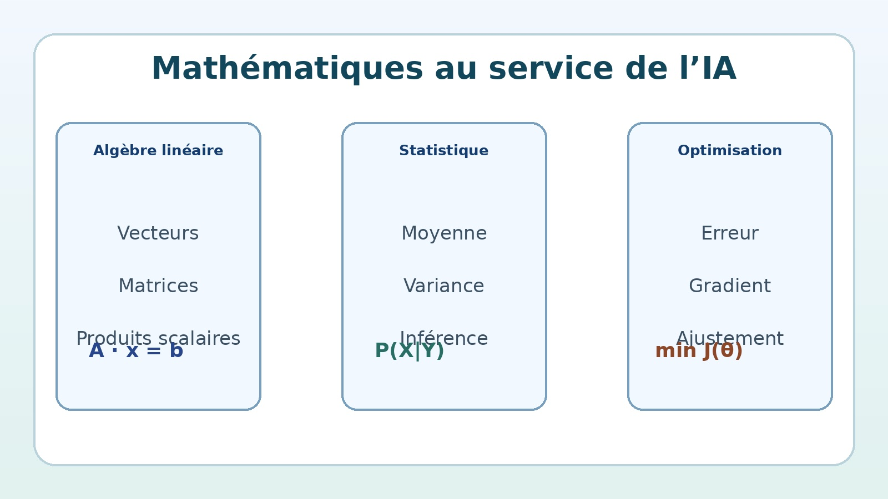
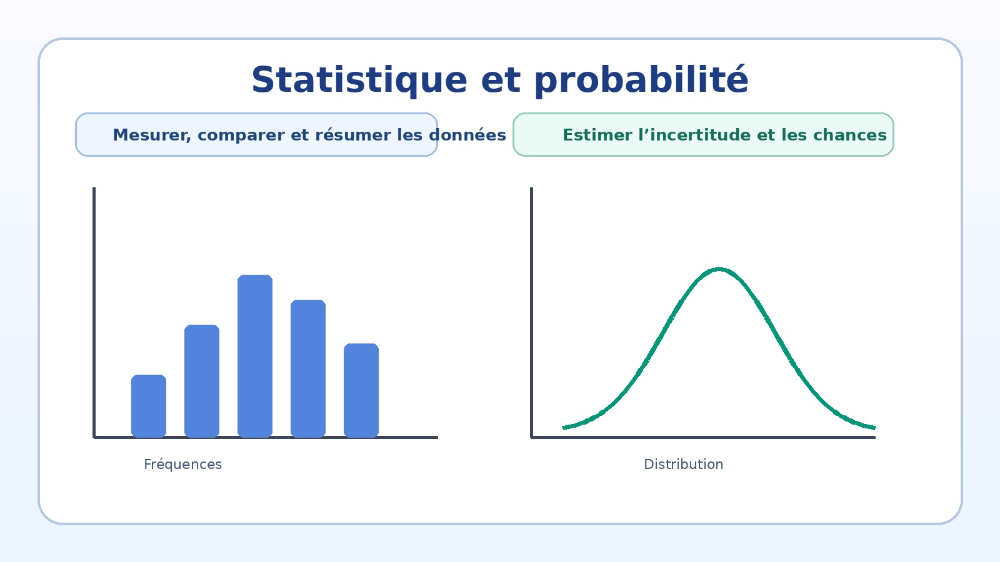
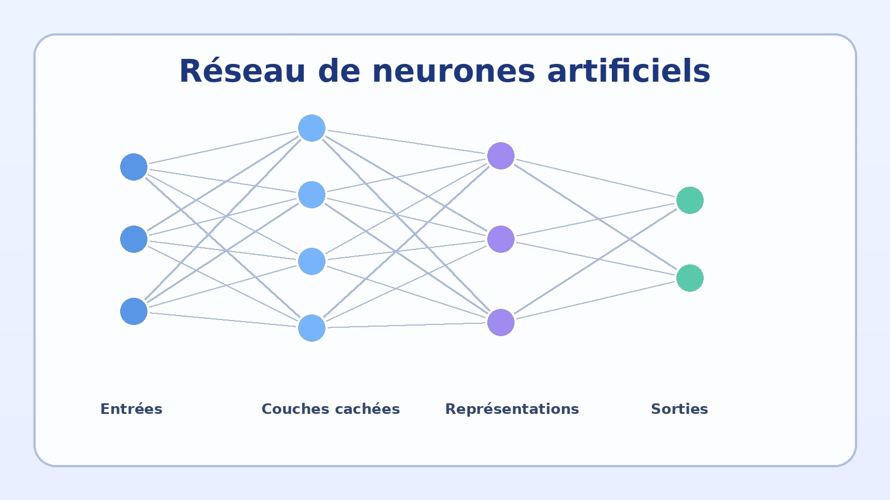
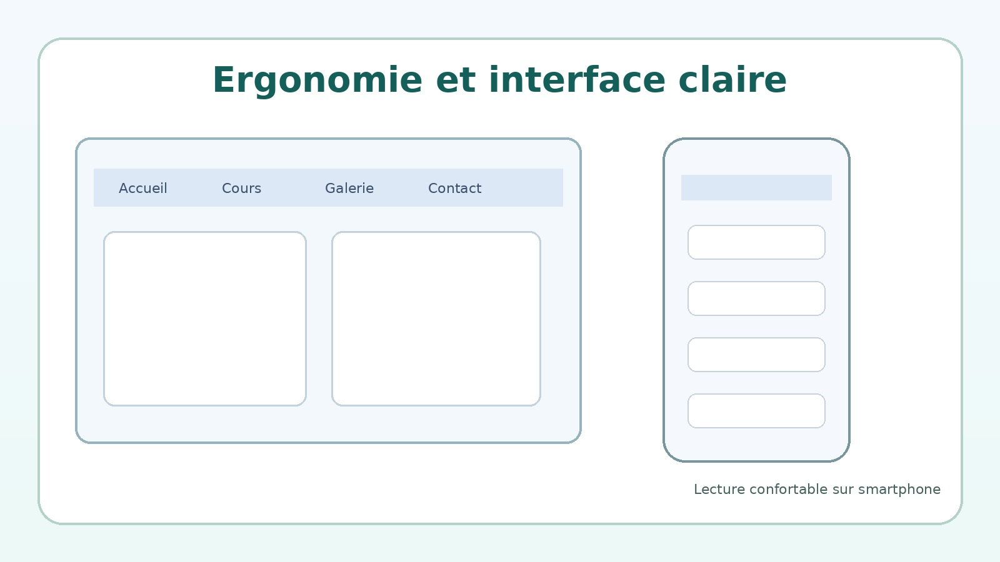
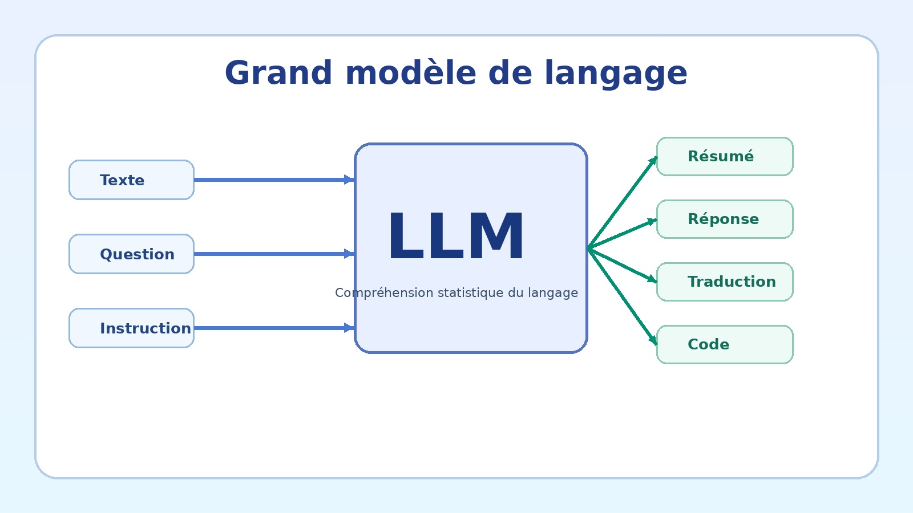
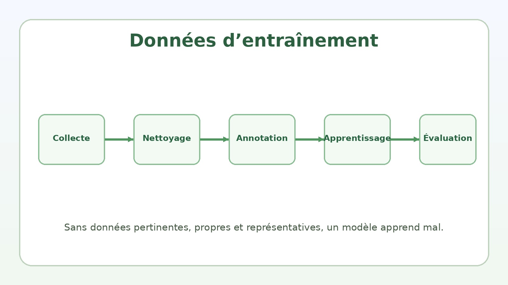
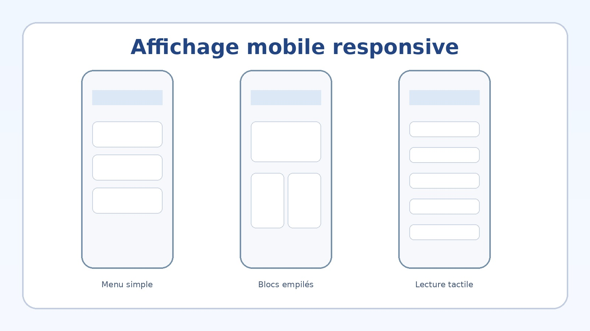

1. Introduction générale
Qu’est-ce que l’intelligence artificielle et pourquoi ce domaine est-il devenu central ?
L’intelligence artificielle regroupe un ensemble de méthodes permettant à une machine de traiter des données, de repérer des régularités, d’établir des relations, de produire des prédictions ou de générer des contenus. Il ne s’agit pas d’une magie technique, mais d’une combinaison de mathématiques, de statistiques, d’optimisation, d’informatique et de traitement de l’information.
2. Objectifs principaux
Pourquoi utiliser l’IA ?
- automatiser certaines tâches répétitives ;
- classer, reconnaître ou trier des données ;
- faire des prédictions ;
- analyser un texte, une image ou un signal ;
- assister la décision humaine ;
- générer du texte, des images ou du code.
Limite importante
Une IA peut être très utile sans être intelligente au sens humain. Elle peut produire de bons résultats sur certaines tâches tout en restant fragile, biaisée ou trompeuse dans d’autres cas.
3. Les briques fondamentales
Les piliers techniques
- probabilités ;
- statistique ;
- algèbre linéaire ;
- optimisation ;
- programmation ;
- données de qualité.

Mathématiques, données et calcul : le socle réel de l’IA
4. Les grandes familles de modèles
Tous les modèles ne fonctionnent pas de la même manière.
Modèles symboliques
Ils utilisent des règles explicites, de la logique et des structures de raisonnement formel. Ils sont souvent précis sur un domaine fermé, mais peu souples.
Modèles statistiques
Ils apprennent à partir des fréquences, des corrélations et des distributions observées dans les données. Ils constituent la base historique d’une grande partie du machine learning.
Réseaux de neurones
Ils apprennent des représentations internes à plusieurs niveaux. Ils sont au cœur de l’apprentissage profond et des grands modèles modernes.
5. Les LLM : grands modèles de langage
Pourquoi ces modèles occupent-ils aujourd’hui une place dominante ?
Définition simple
Un LLM est un grand modèle entraîné sur d’énormes volumes de textes. Son principe de base consiste à prédire la suite la plus probable dans une séquence. Ce mécanisme, répété à très grande échelle, lui permet de résumer, reformuler, expliquer, traduire, répondre et générer des textes complexes.
Ce qu’il sait faire
- expliquer un sujet ;
- résumer un document ;
- traduire ;
- générer du code ;
- proposer des brouillons ;
- répondre à des questions en langage naturel.
Ce qu’il ne faut pas croire
Un LLM n’est pas automatiquement fiable. Il peut produire des réponses plausibles mais fausses. Il faut donc vérifier les faits, surtout dans les domaines sensibles.
6. Approches statistiques et probabilités
Sans probabilité ni statistique, l’IA moderne n’existe pas.
Rôle de la probabilité
La probabilité mesure l’incertitude. Dans un modèle de langage, elle sert par exemple à estimer quel mot a le plus de chances de venir ensuite dans une phrase.
Rôle de la statistique
La statistique permet d’analyser les données, de repérer des tendances, d’estimer des paramètres et de généraliser à partir d’exemples.

La probabilité et la statistique servent à modéliser l’incertitude et l’apprentissage
| Notion | Rôle | Exemple simple |
|---|---|---|
| Probabilité | Mesurer une chance ou une incertitude | Prévoir le mot suivant dans une phrase |
| Statistique | Apprendre à partir d’observations | Estimer une tendance dans des données |
| Optimisation | Réduire l’erreur d’un modèle | Ajuster les paramètres pour améliorer les résultats |
7. Les neurones artificiels
Le mot “neurone” est souvent employé à tort comme s’il s’agissait de biologie pure.
Principe
Un neurone artificiel reçoit des entrées, leur applique des poids, calcule une somme pondérée, puis transmet le résultat à une fonction d’activation. Cette sortie devient ensuite une entrée pour d’autres neurones.
Pourquoi plusieurs couches ?
Une seule couche est vite limitée. Plusieurs couches permettent d’apprendre des motifs de plus en plus abstraits : contours, formes, objets, relations ou structures de langage.

Exemple visuel d’un réseau de neurones artificiels
8. Les grandes méthodes d’apprentissage
Chaque approche répond à un type de problème.
Apprentissage supervisé
On fournit au modèle des exemples avec la bonne réponse attendue. Il apprend à relier une entrée à une sortie correcte.
Apprentissage non supervisé
On fournit uniquement des données, sans réponse attendue. Le modèle cherche alors des structures, des groupes ou des ressemblances.
Apprentissage semi-supervisé
On combine un petit volume de données annotées avec un plus grand volume de données non annotées.
Apprentissage par renforcement
Un agent agit dans un environnement et reçoit des récompenses ou des pénalités. Il apprend progressivement à mieux agir.
9. Outils et techniques courants
Outils logiciels
- Python
- PyTorch
- TensorFlow
- Jupyter
- bibliothèques de traitement de données
Étapes techniques
- collecte de données ;
- nettoyage ;
- entraînement ;
- validation ;
- test ;
- déploiement.
Critères d’évaluation
- précision ;
- rappel ;
- score F1 ;
- robustesse ;
- coût ;
- temps de réponse.
10. Ergonomie, affichage et clarté d’une page
Une bonne page ne dépend pas seulement du contenu, mais aussi de sa lisibilité.
Règles utiles
- utiliser une hiérarchie visuelle claire ;
- séparer les idées en blocs distincts ;
- prévoir des marges suffisantes ;
- éviter les couleurs agressives ;
- limiter les longueurs de ligne ;
- soigner la lecture sur smartphone.
Adaptation mobile
Sur petit écran, une bonne page doit empiler les colonnes, élargir les boutons tactiles, simplifier la navigation et conserver des tailles de police confortables.

Ergonomie visuelle et adaptation responsive
11. Galerie d’illustrations
Tu peux remplacer librement les images par tes propres fichiers.



12. Conclusion
L’intelligence artificielle moderne repose moins sur une idée mystérieuse que sur une architecture rigoureuse : des données, des modèles, des probabilités, des statistiques, des méthodes d’optimisation et une puissance de calcul suffisante. Les LLM sont une branche récente et très visible de cet ensemble, mais ils ne résument pas toute l’IA. Pour comprendre le domaine sérieusement, il faut garder ensemble la théorie, la pratique, l’ergonomie des outils et le sens critique.